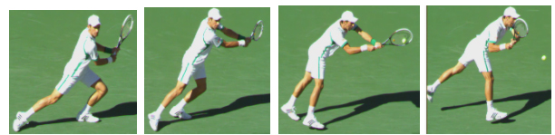
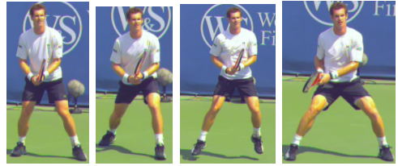
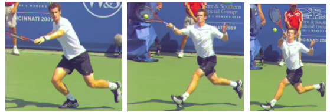

← Bài trước: Rapid, Enduro, and Zig Zag - 3 Conditioning Drill Games | 🏠 Classic Lessons Trang chủ | Bài tiếp: → Return of Serve - The First 3 Principles
Cú trả giao bóng - Linh hoạt, Lựa chọn cú đánh, Bước chia đôi
Cú trả giao bóng:
Linh hoạt, Lựa chọn cú đánh, Bước chia đôi
Bill Tym
Linh hoạt là một nguyên tắc quan trọng trong trả giao bóng.
Trong bài viết đầu tiên của loạt bài này, chúng ta đã xem xét 3 thành phần đầu tiên trong việc phát triển một cú trả giao bóng xuất sắc. (Nhấn vào đây). Những thành phần này bao gồm sự kết hợp giữa tính nhất quán và độ chính xác, vị trí của đầu vợt, và quan sát bóng một cách đúng đắn.
Linh hoạt
Bây giờ, chúng ta sẽ tiếp tục với 3 nguyên tắc khác, bắt đầu với linh hoạt. Linh hoạt là một thành phần quan trọng trong triết lý giảng dạy tổng thể của tôi. Và, giống như tất cả các cú đánh, linh hoạt và khả năng điều chỉnh là những thành phần quan trọng trong trả giao bóng.
Vậy nên, một vài lời nói chung về linh hoạt. Quần vợt là một trò chơi rất khó và phức tạp. Nó đòi hỏi nhiều kỹ năng và phản ứng khác nhau.
Mục tiêu của tôi là cung cấp cho học viên của mình một hộp công cụ hoàn chỉnh bằng cách khám phá tất cả các cú đánh và các phong cách chơi khác nhau. Một hộp công cụ hoàn chỉnh cho phép người chơi lựa chọn chiến lược và chiến thuật tốt nhất đối với một đối thủ cụ thể và có nhiều kế hoạch chơi nếu kế hoạch đầu tiên của bạn không hiệu quả.
Nếu bạn chỉ có thể đánh những cú đánh mạnh trên baseline và đối thủ của bạn vượt trội hơn trong giai đoạn đó hoặc những cú đánh mạnh của bạn không hoạt động trong ngày đó, bạn sẽ thua. Nhưng nếu bạn có những công cụ khác như khả năng cắt bóng hoặc xoáy bóng, hoặc khả năng xông net, bạn vẫn có cơ hội thắng trận đấu. Có tất cả các cú đánh cũng cho phép bạn gây bất ngờ đối thủ bằng một cú đánh khác một khi bạn đã thiết lập bẫy khiến họ quen với "cú đánh thông thường" của bạn.
Liên quan chặt chẽ với linh hoạt là khả năng điều chỉnh trong suốt trận đấu. Có một hộp công cụ đầy đủ giúp bạn điều chỉnh trong suốt trận đấu. Tôi xem trận đấu như một bài tập giải quyết vấn đề. Đặc biệt là, tôi thắng điểm như thế nào, tôi thua điểm như thế nào và những điều chỉnh nào tôi có thể thực hiện để tăng tỷ lệ thắng điểm?
Hơn nữa, khả năng điều chỉnh trong suốt trận đấu cho phép bạn nâng cao trình độ chơi của mình để khi những khoảnh khắc quan trọng của trận đấu xảy ra ở cuối set, bạn đang chơi ở một trình độ cao hơn.
Khi bạn lui về phía sau sân, cú trả giao bóng của bạn có thể giống với cú đánh mặt đất của bạn.
Linh hoạt trong trả giao bóng
Hãy xem cách áp dụng tất cả những điều này vào trả giao bóng. Ví dụ, nếu tốc độ giao bóng tối đa mà bạn thường gặp là 90 mph và sau đó bạn gặp một cú giao bóng 105 mph, bạn sẽ không có kỹ năng phản ứng phù hợp để trả giao bóng từ vị trí trả giao bóng thông thường của mình.
Vì vậy, đừng cố chấp - hãy lui về phía sau. Cùng điều này cũng áp dụng nếu bạn đang chơi với một đối thủ thông thường nhưng có một ngày không tốt. Quy tắc cơ bản của tôi là đối với mỗi bước - khoảng 3 feet - bạn lui về phía sau, giao bóng có hiệu quả chậm đi khoảng 5 dặm/giờ vì bước lui cho bạn thêm thời gian. (Để biết thêm về cách tốc độ bóng giảm trong suốt quá trình giao bóng và các cú đánh khác, Nhấn vào đây.)
Mặc dù Rafael Nadal sử dụng nhiều phong cách khác nhau trong vị trí trả giao bóng, nhưng khi đối mặt với một người giao bóng lớn, ông thường trả giao bóng từ phía sau baseline. Từ vị trí đó, ông có thể sử dụng một cú đánh gần với cú đánh mặt đất thông thường hơn so với cú đánh rất nhỏ mà ông sẽ phải sử dụng nếu vị trí trả giao bóng của ông gần baseline. Nadal không phải là người duy nhất sử dụng chiến lược này.
Nhiều tay vợt chuyên nghiệp châu Âu hàng đầu rất hiệu quả khi có lưng của họ gần như chạm vào hàng rào phía sau khi trả giao bóng. Nhưng nếu họ đang chơi với một đối thủ có cú giao bóng rộng tuyệt vời và có thể hỗ trợ bằng cách giao bóng và bắt lưới, thì họ sẽ cần điều chỉnh và di chuyển vị trí trả giao bóng của mình lên để cải thiện cơ hội phá giao bóng.
Cú bỏ nhỏ là một công cụ quan trọng.
Lựa chọn cú đánh và mục tiêu
Linh hoạt và điều chỉnh không chỉ quan trọng khi nói đến vị trí trả giao bóng. Chúng cũng quan trọng trong lựa chọn cú đánh và chiến thuật trả giao bóng.
Ví dụ, nếu cú trả giao bóng thông thường của bạn là một cú đánh mạnh nhỏ gọn nhưng bạn đang mắc nhiều lỗi hoặc không thể đánh nó một cách hiệu quả để trung hòa giao bóng, hãy chuyển sang cú bỏ nhỏ nơi xoáy bóng sẽ cho phép bạn giảm tốc độ giao bóng. Điều này có nghĩa là bạn phải có cú bỏ nhỏ trong hộp công cụ của mình.
Khả năng thay đổi các cú trả giao bóng cũng cho phép bạn sử dụng yếu tố bất ngờ. Ví dụ, nếu bạn thường trả giao bóng bằng một cú đánh mạnh vào giữa đường T ở phía ad với một cú đánh bên trong ra sau cú trái tay của đối thủ, một cú bỏ nhỏ hoặc bỏ nhỏ qua đường là rất hiệu quả một khi đối thủ đã quen với cú trả giao bóng thông thường của bạn.
Cú trả giao bóng là độc đáo
Tôi sẽ chi tiết các thành phần kỹ thuật cụ thể của cú trả giao bóng bên dưới. Nhưng hãy nhớ nguyên tắc tổng quát rằng, cú trả giao bóng là một cú đánh độc đáo khác biệt so với cú đánh mặt đất thông thường - trừ khi bạn đang trả giao bóng từ phía sau baseline hoặc bạn đang trả giao bóng chậm yếu.
Đôi khi bước duy nhất là một bước nhảy.
Cú trả giao bóng là khác biệt vì bạn đang đối mặt với một loại cú đánh khác. Giao bóng là cú đánh duy nhất trong quần vợt mà đối thủ của bạn có quyền kiểm soát hoàn toàn và những tay vợt hàng đầu có thể giao bóng mạnh một cách nhất quán đến mục tiêu của họ.
Bóng đang di chuyển đến bạn nhanh hơn 30-40% so với một cú đánh mặt đất thông thường. Thường xuyên, bóng vẫn đang bay lên khi bạn tiếp xúc.
Cuối cùng, một cú giao bóng được đặt tốt thường chỉ cho bạn thời gian để bước một bước - có thể dưới dạng một bước nhảy - trước khi tiếp xúc. Tổng cộng, tình huống này là không ổn định và thay đổi cao. Điều bạn cần làm là làm cho kỹ thuật trên cú trả giao bóng trở nên đơn giản nhất có thể để đưa càng nhiều sự ổn định càng tốt vào tình huống không ổn định này.
Một trong những lý do mà Djokovic là một tay vợt trả giao bóng xuất sắc là vì ông rất nhỏ gọn và mượt mà trong kỹ thuật của mình, mang lại sự yên tĩnh cho một tình huống hỗn loạn. Bởi vì cú trả giao bóng là một cú đánh thực sự khác biệt, nó đòi hỏi sự tận tâm và nhiều giờ luyện tập để hoàn thiện. Sử dụng nhiều giờ để hoàn thiện cú đánh mặt đất thông thường của bạn sẽ không chuyển đổi thành sự thành thạo trong trả giao bóng.

Cách tiếp cận nhỏ gọn và mượt mà của Novak Djokovic đối với trả giao bóng mang lại sự ổn định ngay cả khi ông phải nhảy ra để trả giao bóng khó khăn.Vị trí sẵn sàng và bước chia đôi
Tôi thích bước về phía trước trước khi chia đôi.
Nguyên tắc tiếp theo là Vị trí Sẵn Sàng và Bước Chia Đôi. Đây là những điểm kiểm tra quan trọng. Các chân cách nhau ít nhất một khoảng vai. Các gối uốn cong ở tư thế thể thao. Trọng lượng trên đầu ngón chân.
Vợt nắm ra phía trước với tay cầm vợt khoảng ở độ cao của eo. Grip lỏng lẻo. Ngoài những lợi ích khác, grip lỏng lẻo sẽ cho phép bạn chuyển đổi grip nhanh hơn.
Như một phần mở rộng cho bước chia đôi, tôi thích bạn bước một hoặc hai bước về phía trước và sau đó bước vào bước chia đôi. Động lượng từ bước về phía trước có thể làm cho bạn thậm chí còn mạnh mẽ hơn khi bạn hạ xuống và sau đó nhảy ra khỏi bước chia đôi. Đối với nhiều tay vợt, bước về phía trước cũng cho họ một nhịp điệu tốt hơn.
Từ bước về phía trước, bạn bước vào bước chia đôi. Một số điều quan trọng cho bước chia đôi trên trả giao bóng. Đầu tiên, như đã đề cập trong bài viết đầu tiên, (Nhấn vào đây) mắt của bạn cần theo bóng khi cánh tay ném của người giao bóng lên để phóng bóng và tiếp tục theo bóng trong toàn bộ quá trình trả giao bóng.
Đỉnh điểm của bước chia đôi của bạn nên là lúc người giao bóng tiếp xúc với bóng.
Thứ hai, bạn cần thời gian nhảy lên không gian sao cho bạn ở đỉnh điểm của bước chia đôi vào lúc người giao bóng tiếp xúc với bóng. Thứ ba, bạn cần thực hiện một bước chia đôi rộng để khi hạ xuống, các chân của bạn chia rộng với một lượng uốn cong đáng kể ở các gối.
Vị trí hạ xuống rộng này đặt chân bên ngoài của bạn (chân phải cho tay vợt thuận tay phải và chân trái cho tay vợt thuận tay trái) gần hơn với vị trí bạn cần đạt đến cho một giao bóng được đặt vào góc nào đó nếu bạn phải nhảy ra để trả giao bóng. Hạ xuống với các gối uốn cong cho phép bạn đẩy mạnh hơn khỏi mặt đất nếu bạn cần nhảy ra để gặp trả giao bóng. Vị trí thấp cũng giúp bạn cân bằng.
Một điểm cuối cùng về bước chia đôi. Khi bạn hạ xuống từ bước chia đôi, bạn muốn đối mặt với người giao bóng.
Vì người giao bóng có phần nào đó chéo qua người trả giao bóng, điều đó có nghĩa là chân của bạn sẽ hạ xuống ở vị trí chéo như được Novak Djokovic thể hiện bên dưới. Không phải tất cả các tay vợt hàng đầu đều tuân theo nguyên tắc này, nhưng điều đó có ý nghĩa để tuân theo nó.
Giống như một hậu vệ trong bóng rổ đối mặt với cầu thủ tấn công để có thể phản ứng lại sự di chuyển của cầu thủ tấn công, bạn sẽ phản ứng tốt hơn với giao bóng nếu bạn đối mặt trực tiếp với người giao bóng khi hạ xuống bước chia đôi của mình.


Andy Murray thể hiện vị trí sẵn sàng, sau đó là một bước về phía trước và sau đó là một bước chia đôi rộng với các gối uốn cong cho phép anh ta nhảy ra và bao phủ một giao bóng rất rộng.
Tôi cá nhân thích đi một bước xa hơn và có một vị trí chéo nhẹ trong vị trí sẵn sàng để thúc đẩy hạ xuống bước chia đôi ở vị trí chéo.  Novak Djokovic thể hiện nguyên tắc chân hạ xuống từ bước chia đôi ở vị trí chéo để bạn có thể đối mặt trực tiếp với người giao bóng.
Novak Djokovic thể hiện nguyên tắc chân hạ xuống từ bước chia đôi ở vị trí chéo để bạn có thể đối mặt trực tiếp với người giao bóng.
Lưu ý rằng trong ảnh bên trái, thể hiện trả giao bóng từ phía dịch vụ deuce, chân phải của Novak hạ xuống trước chân trái của anh để đối mặt trực tiếp với người giao bóng; và trong ảnh bên phải, thể hiện trả giao bóng từ phía dịch vụ ad, chân trái của Novak hạ xuống trước chân phải của anh để đối mặt trực tiếp với người giao bóng.
Ba nguyên tắc trả giao bóng khác sẽ tiếp theo! Hãy theo dõi.

Bill Tym, một USPTA Master Professional và cựu chủ tịch USPTA quốc gia, đã tham gia vào quần vợt trong hơn nửa thế kỷ với tư cách là huấn luyện viên, tay vợt và quản trị viên. Ông đã huấn luyện đội tuyển quần vợt đại học Vanderbilt giành được vị trí đầu tiên trong giải đấu NCAA. Với tư cách là tay vợt, Tym đã giành được danh hiệu vô địch đơn nam của Liên minh Đại học Nam miền Hoa Kỳ tại Đại học Florida. Ông cũng thi đấu trên tour quốc tế và giành được 10 danh hiệu quốc gia và quốc tế.
Với tư cách là giám đốc điều hành của USPTA, Tym đã giúp tạo ra một bài kiểm tra chứng nhận tiêu chuẩn. Tym đã được trao danh hiệu USPTA Professional of the Year vào năm 1982, College Coach of the Year vào năm 1989, và Touring Coach of the Year vào năm 1997 và 2002. Ông cũng đã nhận được Giải thưởng Thành tựu trọn đời George Bacso từ USPTA vào năm 2001 và Giải thưởng Đóng góp Học thuật Quần vợt Quốc tế từ Đại sảnh Danh vọng Quần vợt Quốc tế vào năm 1981.
Bill muốn ghi nhận sự giúp đỡ của Ed Weiss, nhà đầu tư sáng lập của Tennisplayer trong việc chuẩn bị bài viết này.
← Bài trước: Rapid, Enduro, and Zig Zag - 3 Conditioning Drill Games | 🏠 Classic Lessons Trang chủ | Bài tiếp: → Return of Serve - The First 3 Principles